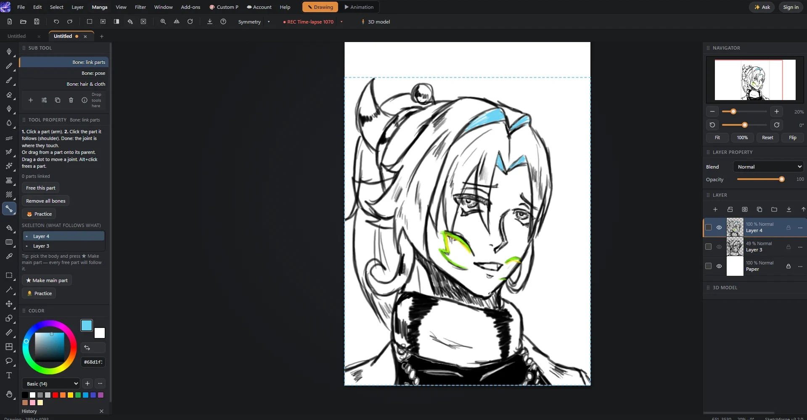

✒️ Drawing that feels right
Pens, pencils, brushes, watercolour and airbrush with pressure from any tablet — Wacom, XP-Pen, Huion, Apple Pencil.
- QuickShape: hold to snap into a perfect line, circle or rectangle
- Stabiliser, symmetry, paper textures, rulers
- Layers, folders, masks, clipping, 28 blend modes, 16 live effects
